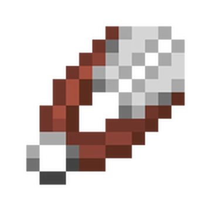

É a primeira ferramenta que permite minerar minérios valiosos como ouro, diamante e redstone.
Oferece um equilíbrio ideal entre proteção, durabilidade e disponibilidade para os jogadores, servindo como um excelente material de defesa para enfrentar monstros e outros perigos do jogo.

Servindo para obter blocos como lã de ovelhas sem matá-las, folhas, grama, vinhas e teias de aranha sem danificar a planta original, e para coletar favos de mel de colmeias sem irritar as abelhas.